1. 原本的文字版改成 baoyu 風格醫療圖卡。
2. 保留 BLS / 插管融會貫通邏輯與每頁語音。
3. 以「正確時間、正確動作、確認有效」作為主軸。
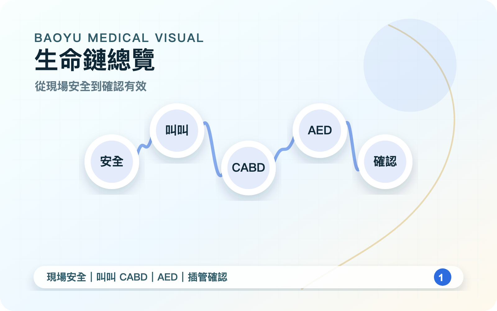
1. 先確認現場安全，避免救援者受傷。
2. 急救要立即叫支援、拿 AED、分工。
3. 早期高價值動作優先於高技術動作。
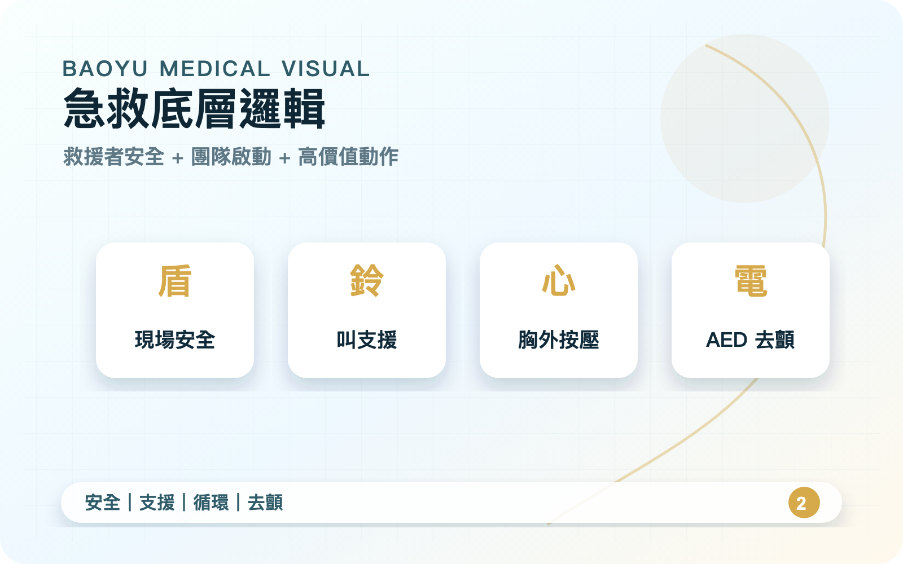
1. 第一個叫：叫病人，快速判斷反應。
2. 第二個叫：叫支援，啟動 119 / AED。
3. CABD 是存活鏈，不只是口訣。
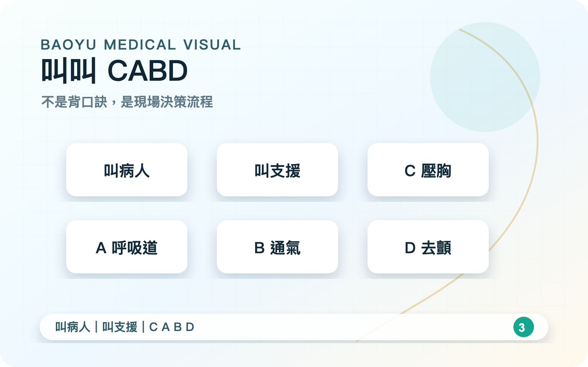
1. 速率至少 100 次／分鐘。
2. 成人深度約 5 cm，完整回彈。
3. 中斷盡量不超過 10 秒。
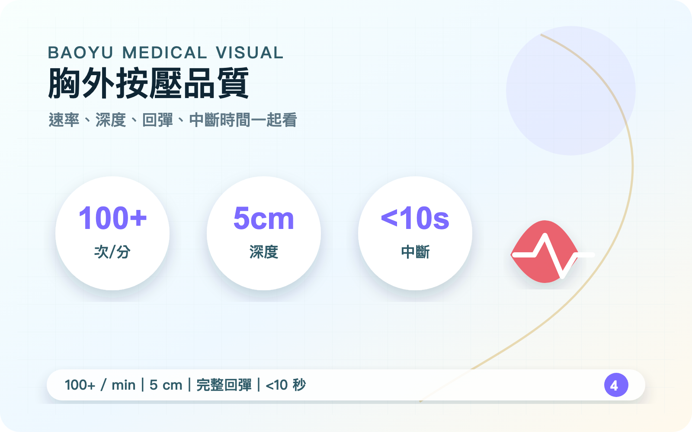
1. 一般用壓額抬下巴法。
2. 疑似頸椎傷改下顎推擠。
3. 通氣以胸廓適度起伏為準，不過度。
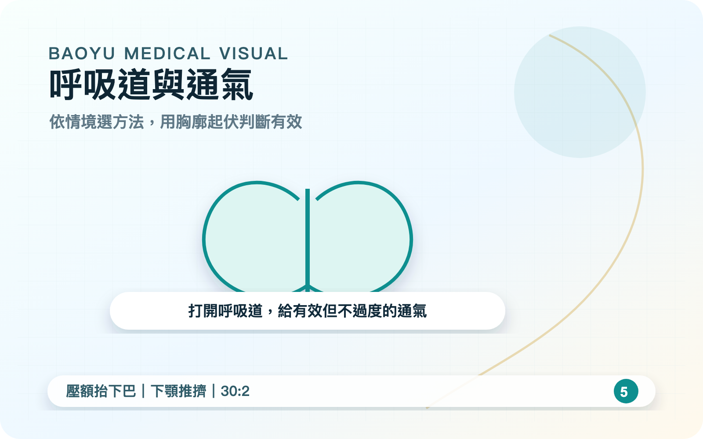
1. AED 是把混亂電活動重整。
2. 依指示分析與電擊。
3. 電擊後立刻恢復胸外按壓。
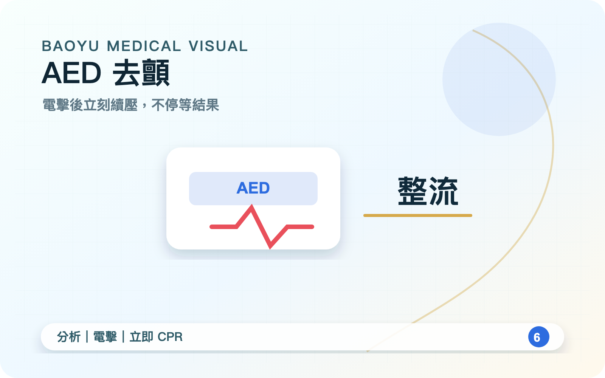
1. 插管是為了穩定呼吸道與氧合。
2. 先確認適應症、設備、人員與藥物。
3. 插完還要能確認並維持。
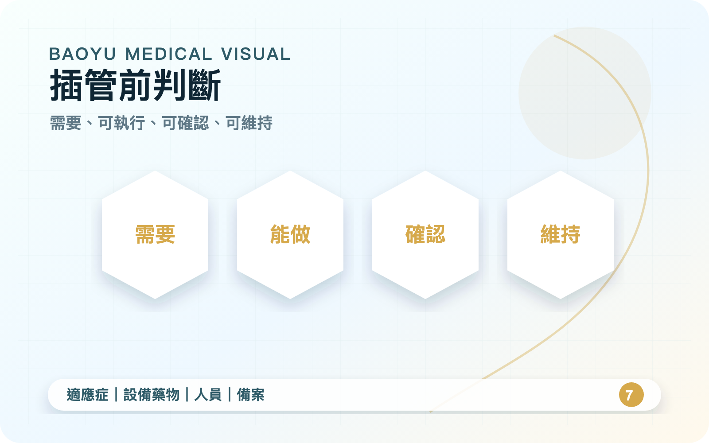
1. 插完不等於插對。
2. 五點聽診、EtCO₂、X 光互相補強。
3. 確認與持續監測是安全核心。
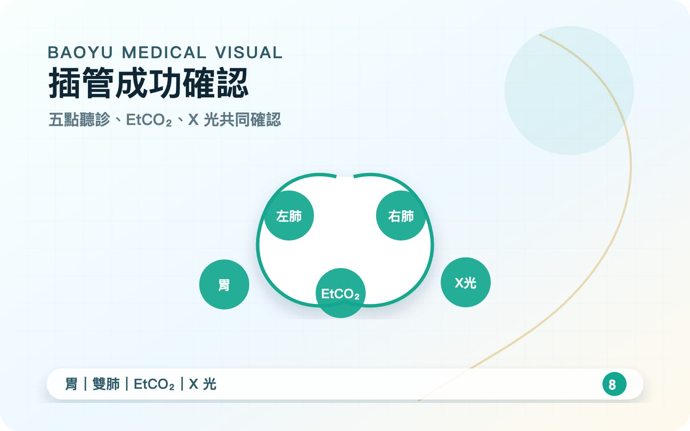
1. 插管不能造成長時間 CPR 中斷。
2. 壓胸、通氣、AED、計時、器械要分工。
3. 失敗備案要在插管前準備好。
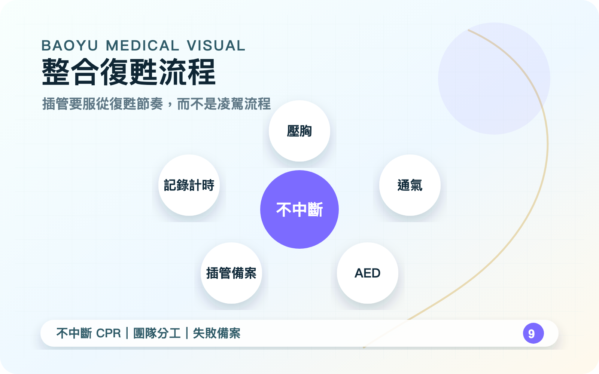
1. BLS 常錯在延遲、按壓品質、過度通氣。
2. 插管常錯在無適應症、無備案、確認不足。
3. 教學要用情境題訓練判斷。
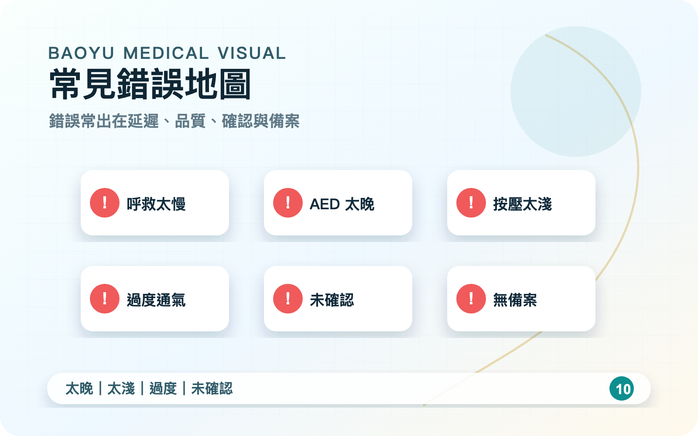
1. BLS：及時、正確、不中斷。
2. 插管：適應症、操作能力、確認位置。
3. 先救命，再優化；確認有效才算完成。
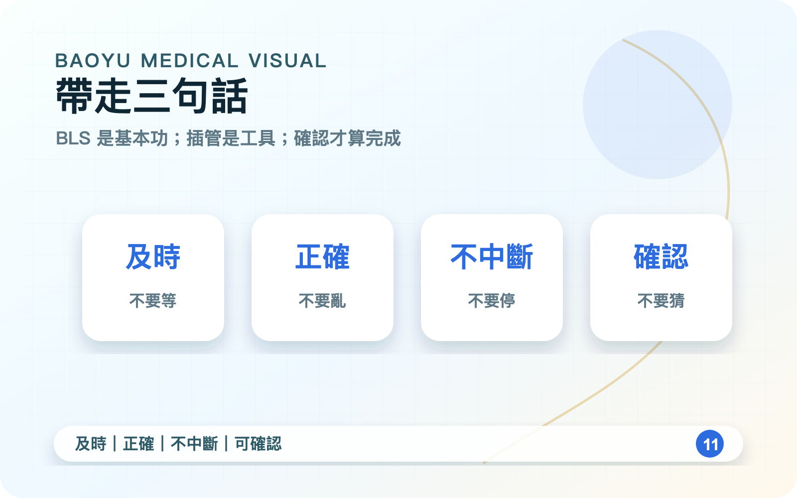